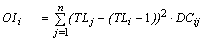

7.4 Key indices
Biomass accumulation
Ecopath is not necessarily a steady-state model. If the biomass for a group is known, e.g., at the beginning of the year and at the beginning of the next year, the biomass accumulation (BA) can be calculated as the difference between these biomasses. BA is a production term that can be entered for all living groups (default is 0), but is calculated for detritus groups (see Detritus fate). BA is a flow term, with a rate unit of, e.g., t / km² / year. The default value for BA is zero indicating no biomass accumulation. A negative value signifies biomass depletion (biomass decreased during period modelled).
Biomass accumulation rate
Biomass accumulation can also be represented as a rate (i.e., proportion of the total biomass; unit is /year).
Net migration
The net migration is calculated as immigration less emigration. This means that net migration will be negative if there is more coming into the system than leaving it. This may seem contradictory but it should be remembered that a negative mortality yields an increase in population. Fisheries biologists rarely consider migration, at least in biomass terms, and even more rarely quantify it. If the net migration is positive (immigration > emigration), but not entered, the main effect will depend on the previous entries:
- if the production had been entered, the fraction of production directed toward the detritus will be overestimated; or
- if production was to be estimated, this estimate will be underestimated.
See Other production and Dealing with open system problems for important notes about migration in Ecopath.
Flow to detritus
For each group, the flow to the detritus consists of what is egested (the non-assimilated food) and those elements of the group, which die of old age, diseases, etc., (i.e., of sources of ‘other mortality’, expressed by 1 - EE). The flow to the detritus, expressed, e.g., in t·km-2·year-1, should be positive for all groups.
Problem 4: Estimation of Q/B for detritivores
It is not possible to estimate the Q/B ratio for groups that feed exclusively on detritus. For detritus the production is not defined, and it will be necessary for such detritivores to input an estimate of Q/B (or P/B and an estimate for GE, gross food conversion efficiency).
Net efficiency
The net food conversion efficiency is calculated as the production divided by the assimilated part of the food, i.e.,
Net efficiency = P/B / (Q/B · (1 - GS))
where P/B is the production / biomass ratio, Q/B is the consumption / biomass ratio, and GS is the proportion of the food that is not assimilated.
The net efficiency can also be expressed
Net efficiency = Production / (production + respiration)
The net efficiency is a dimensionless fraction. It is positive and, in nearly all cases, less than 1, the exceptions being groups with intermediate trophic modes, e.g., groups with symbiotic algae. The net efficiency cannot be lower than the gross food conversion efficiency, GE.
Omnivory index
The ‘omnivory index’ was introduced in 1987 (Pauly et al., 1993a) in the initial version of the Ecopath II software. This index (OI) is calculated as the variance of the trophic level of a consumer's prey groups. Thus

Eq. 22
where, TLj is the trophic level of prey j, TLi is the trophic level of the predator i, and, DCij is the proportion prey j constitutes to the diet of predator i.
When the value of the omnivory index is zero, the consumer in question is specialized, i.e., it feeds on a single trophic level. A large value indicates that the consumer feeds on many trophic levels. The omnivory index is dimensionless.
The square root of the omnivory index is the standard error of the trophic level, and a measure of the uncertainty about its precise value due to both omnivory and sampling variability.